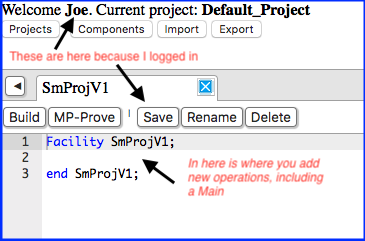
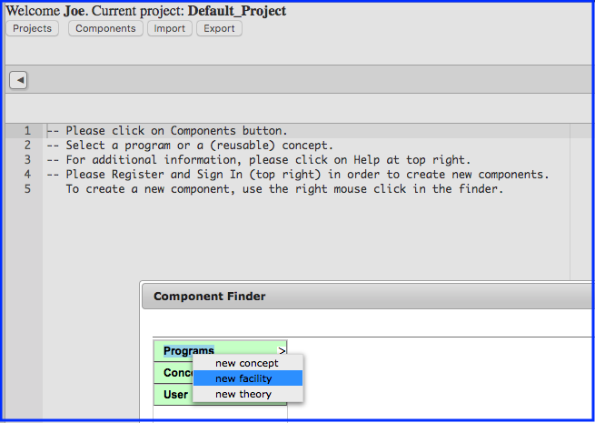

The screen shot below shows Web IDE just after creating an new program  |
 Creating a New Program |
Operation Rotate (updates Q: Queue); requires ensures |
Operation Split_Into(clears P: Queue; replaces E: Integer; replaces Q: Queue); requires 1 <= |P|; ensures #P = Q o <E>; -- Team member: |
Operation Combine(updates P: Queue; alters E: Integer; clears Q: Queue); requires |P| + 1 + |Q| <= 3; ensures P = #P o <#E> o #Q; -- Team member: |
Operation Copy_Queue(restores Q: Queue; replaces Q_Copy: Queue); ensures Q_Copy = Q; -- Team member: |